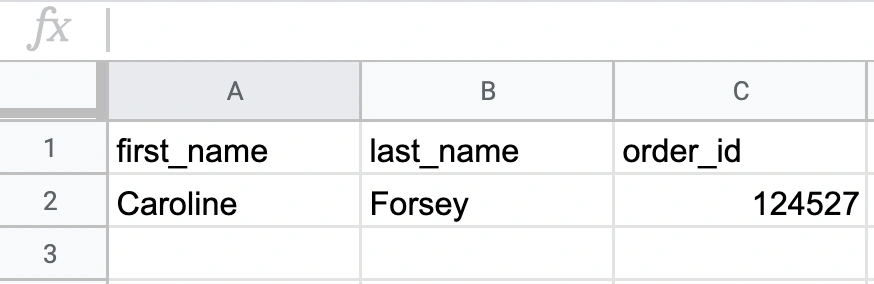
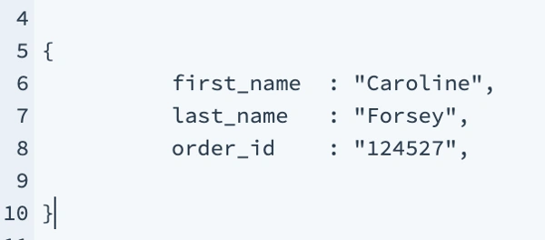
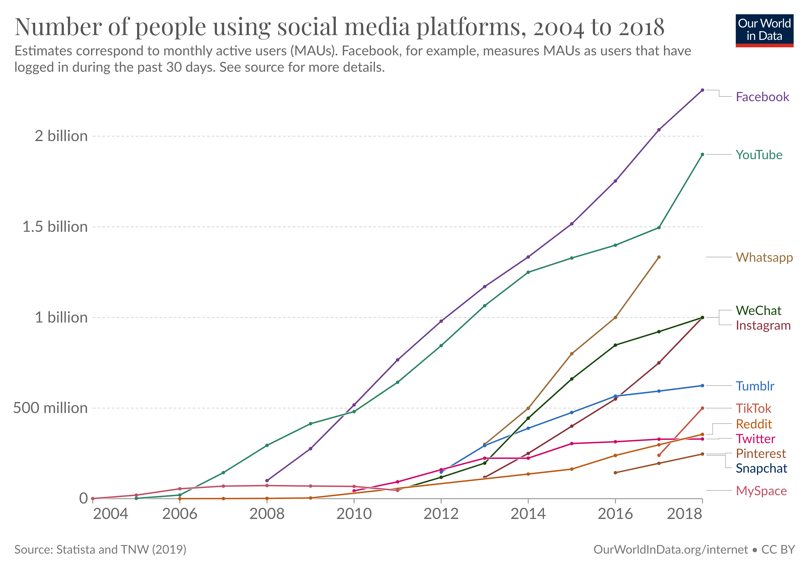
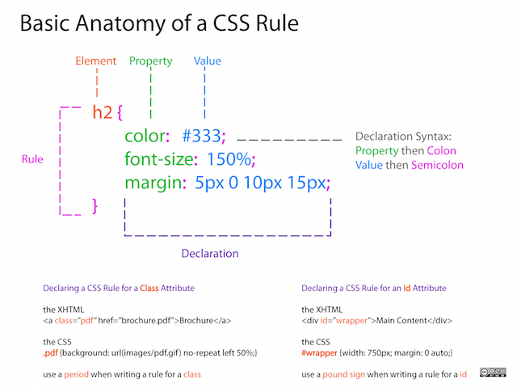
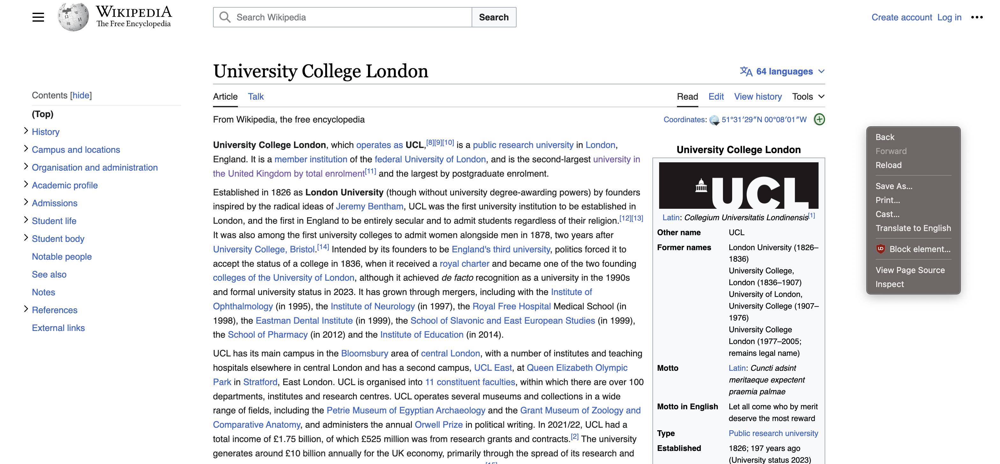
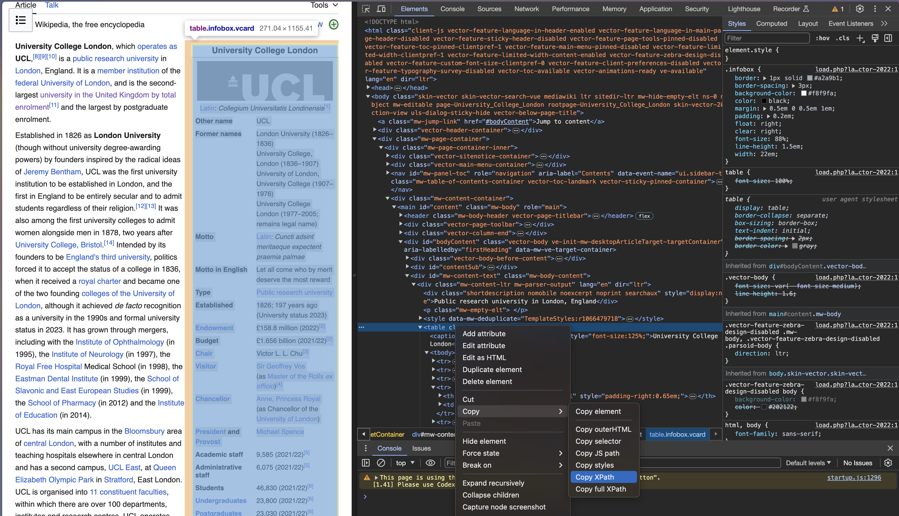
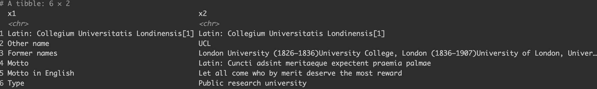
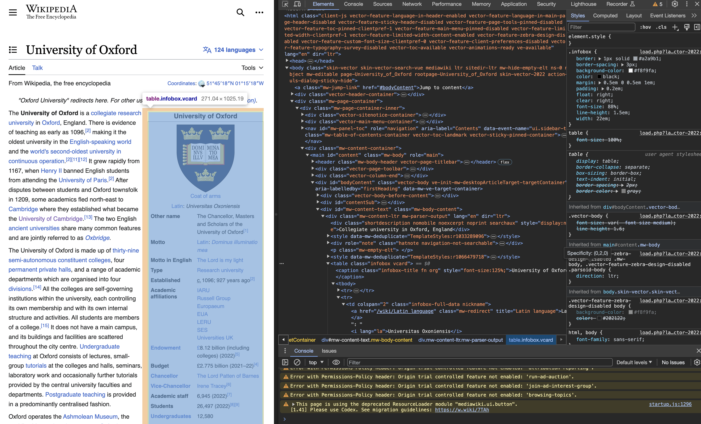
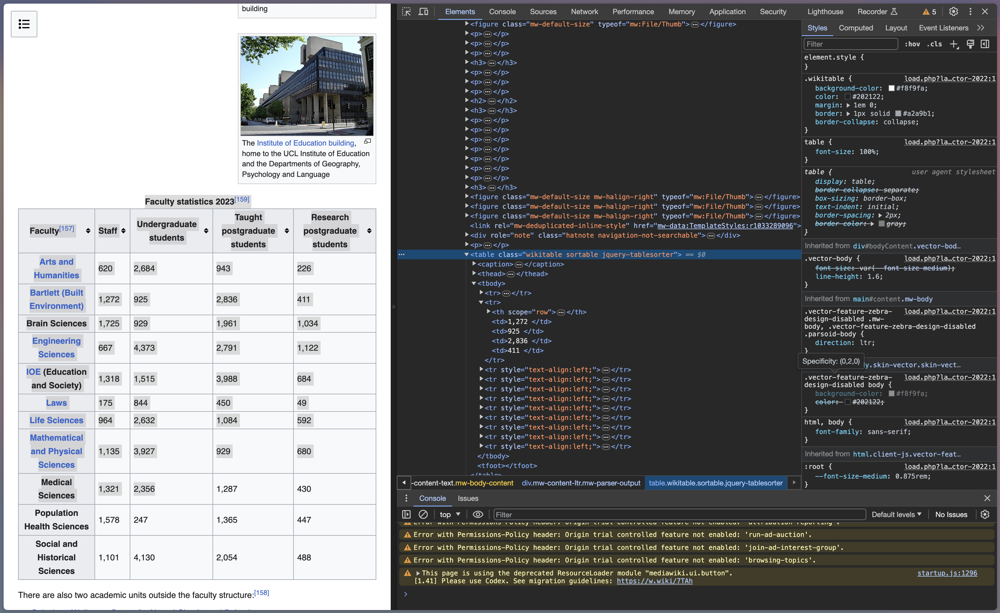
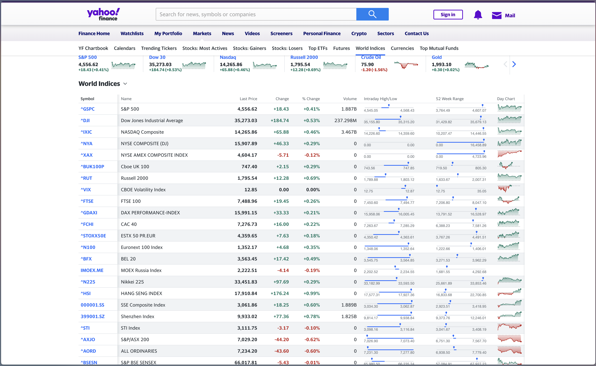

🗓️ Week 07
Automated Data Collection I
21 Nov 2025
HTML-CSS: Webscraping
What is semi-structured data?
It does not conform to a data model but has some structure
It is not stored in rows and columns
This type of data contains tags and elements (Metadata) which is used to group data and describe how the data is stored
Similar entities are grouped together and organised in a hierarchy
Examples: HTML (e.g. websites), XML (e.g. government data), JSON (e.g. social media API)


What is webscraping?
Extracting data from webpages:
Increasing amount of data is available on websites:
Speeches, sentences, biographical information
Social media data, newspaper articles, forums
Geographic information, conflict data, climate data
process of extracting this information automatically and transforming it into a structured dataset
Data revolution

Webscraping benefits
Any content that can be viewed on a webpage can be scraped
No API needed
No rate-limiting or authentication (usually)
Webscraping challenges
Rarely tailored for researchers
Messy, unstructured, inconsistent
Entirely site-dependent
Sites change their layout all the time
Ethics in webscraping
Check a site’s terms and conditions before scraping. Some websites disallow scrapers on robots.txt file
Consider non-intrusive ways to gather data. Don’t exhaust the site’s server
Data protection: data means traces of individuals
Secure storage vs. deletion of data
Anonymisation of users
HTML - basics
The core of a website is HTML (Hyper Text Markup Language)
HTML defines the structure of a webpage using a series of elements. HTML elements tell the browser how to display the page by labeling pieces of content: “This is a heading,” “this is a paragraph,” “this is a link,” etc.
HTML - elements
An HTML element is defined by a start tag, some content, and an end tag

| Tag | Meaning |
|---|---|
<head> |
page header (metadata, etc.) |
<body> |
holds all of the content |
<p> |
regular text (paragraph) |
<h1>,<h2>,<h3> |
header text, levels 1, 2, 3 |
ol,,<ul>,<li> |
ordered list, unordered list, list item |
<a href="page.html"> |
link to “page.html” |
<table>,<tr>,<td> |
table, table row, table item |
<div>,<span> |
general containers |
HTML - attributes
All HTML elements can have attributes
attributes provide additional information about an element
they are included inside the tag
Examples:
HTML - attributes II

CSS
CSS stands for Cascading Style Sheet. CSS defines how HTML elements are to be displayed
HTML came first. But it was only meant to define content, not format it. While HTML contains tags like
<font>and<color>, this is a very inefficient way to develop a website. Some websites can easily contain 100+ individual pages, each with their own HTML codeCSS was created specifically to display content on a webpage. Now, one can change the look of an entire website just by changing one file
Most web designers litter the HTML markup with tons of classes and ids to provide “hooks” for their CSS
You can piggyback on these to jump to the parts of the markup that contain the data you need
CSS anatomy
- Selectors:
Element selector: p
Class selector: p class="blue"
I.D. selector: p id="blue"
- Declarations:
Selector: p
Property: background-color
Value: yellow
CSS anatomy II

CSS + HTML
<body>
<table id="content">
<tr class='name'>
<td class='firstname'>
Kurtis
</td>
<td class='lastname'>
McCoy
</td>
</tr>
<tr class='name'>
<td class='firstname'>
Leah
</td>
<td class='lastname'>
Guerrero
</td>
</tr>
</table>
</body>We can use CSS selectors (see example)
SelectorGadget as Chrome Extension
Inspect option in Chrome
Let’s inspect a website
- Use inspect option to select table to copy
Xpath–example://*[@id="mw-content-text"]/div[1]/table[1]


Using RVest to Read HTML
Overview of rvest
The package rvest allows us to:
Collect the HTML source code of a webpage
Read the HTML of the page
Select and keep certain elements of the page that are of interest
Relatively simple: no dynamic webpages
Main uses: Tables, texts, extracting links (downloading files)
Parsing HTML code
First step in webscraping: read HTML code in R and parse it (understanding structure)
xml2packageread_html: parse HTML code into R (and )rvest package
html_text: extract text from HTML codehtml_table: extract tables in HTML codehtml_nodes: extract components with CSS selectorhtml_attrs: extract attributes of nodes
Setup
Parsing the url of the website
library(rvest)
library(xml2)
url <- "https://en.wikipedia.org/wiki/University_College_London"
parsed <- read_html(url)This returns an xml object that contains all the information of the website
Extracting selected information
- Select the desired part
- Convert to table

Tidying data is part of webscraping
Automating the process
The task is to scrap Wiki info-cards of three universities (UCL; Oxford; Cambridge)
#see whether path is allowed to be scraped
paths_allowed(paths="https://en.wikipedia.org/wiki/University_College_London")
#creating url list for the websites to be scraped
url_list <- c(
"https://en.wikipedia.org/wiki/University_College_London",
"https://en.wikipedia.org/wiki/University_of_Cambridge",
"https://en.wikipedia.org/wiki/University_of_Oxford"
)
Inspection
url <- "https://en.wikipedia.org/wiki/University_College_London"
download.file(url, destfile = "scraped_page.html", quiet = TRUE)
target <- read_html("scraped_page.html")
# If you want character vector output
target1 <- target %>%
html_nodes(xpath = '//*[@id="mw-content-text"]/div[1]/table[1]') %>%
html_text()
# If you want table output
target2 <- target %>%
html_nodes(xpath = '//*[@id="mw-content-text"]/div[1]/table[1]') %>%
html_table()Writing a function
Automating data collection
Scraping tables
testlink <- read_html("https://en.wikipedia.org/wiki/University_College_London")
table <- testlink %>%
html_nodes(xpath='//*[@id="mw-content-text"]/div[1]/table[2]') %>%
html_table()
table <- data.frame(table)
table
Practical limitations to scraping
Web-pages are complex with many different elements
Dealing with the great amount of unstructured data
APIs provided at least two advantages over scraping:
The first is that they made it easier to get at the data. Rather than effectively ‘unbaking’ the HTML-formatted data and user interface, the API allowed for an ordered and predictable transmission of information
The second is that the API often provided information that was not visible to the public through the web
Further materials
Further texts:
Tutorials:
Lab exercise: Scraping global indicies table on Yahoo finance
Load required libraries
Check whether scraping is permitted on Yahoo Finance (https://finance.yahoo.com/world-indices/)
Identify XPath for the table, read the path (read_html)
Keep only the columns: (Name, Last Price, % Change)
Save this information as a new data frame (yahoo_data)
Use
plotlyto create a bar plot to visualise stock indicies prices and changes


SOCS0100 – Computational Social Science